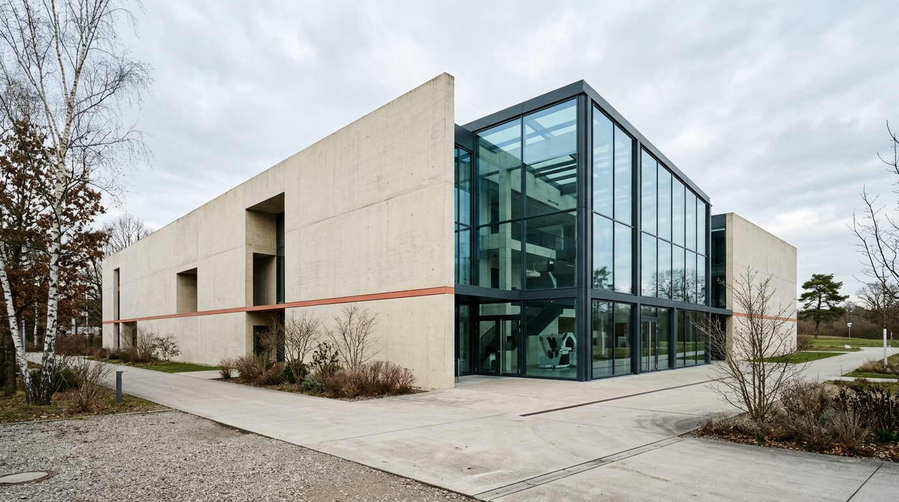

01 | PERCEPTION
9 STAGES
Tensor Studio
Tracing pixels, spatial grids, Top-K dictionaries, and closed-loop causal ablation...
On ResNet-18 superposition, sparse autoencoders, and causal verification in RoboCasa manipulation.
Tracing pixels, spatial grids, Top-K dictionaries, and closed-loop causal ablation...
Pixel/part-wise vs. whole-object-wise detection across 11 curated SAE papers...

Offline literature synthesis before Dec 04, GPU rollouts and SAE training after...
Standard ResNet-18 backbones possess only 512 channels at layer4 before pooling. When encoding cluttered RoboCasa kitchens, individual neurons fire for multiple unrelated visual attributes simultaneously.
We tap pre-pooling spatial grids (layer3 8x8 and layer4 4x4) per camera and train overcomplete Top-K / BatchTopK / JumpReLU Sparse Autoencoders offline without reward or bounding-box supervision.
Active latents project to spatial heatmaps grounded against simulator object masks. Spliced rollouts under set-level ablation test Discovery (D-C), Removal (R-C), and Consequence (C-C) against random controls.